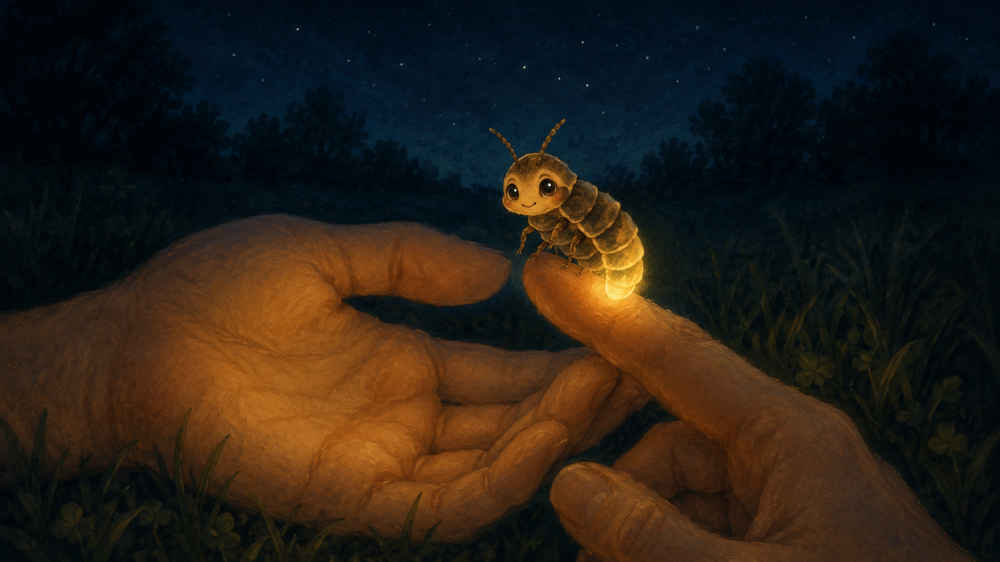
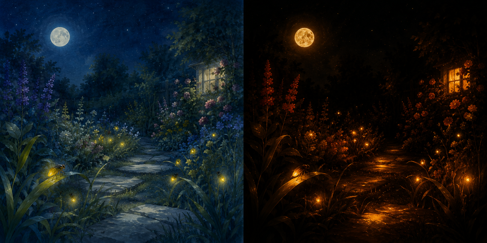
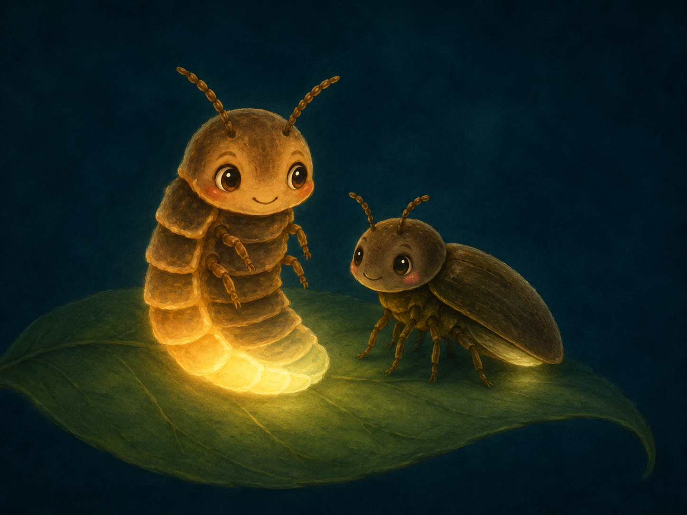
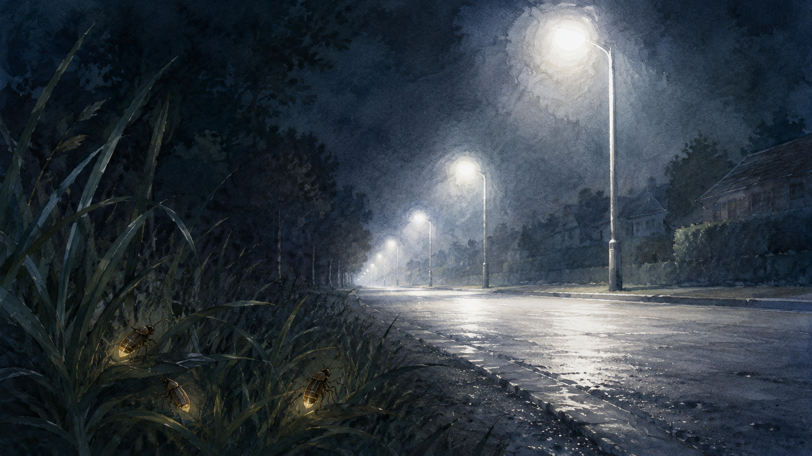
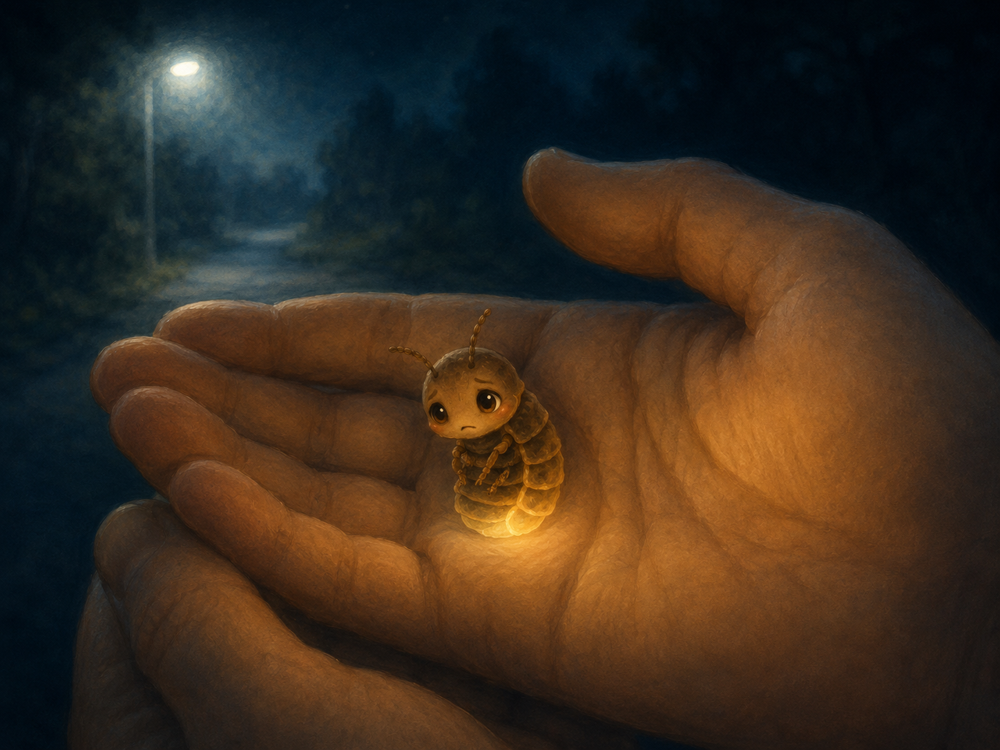
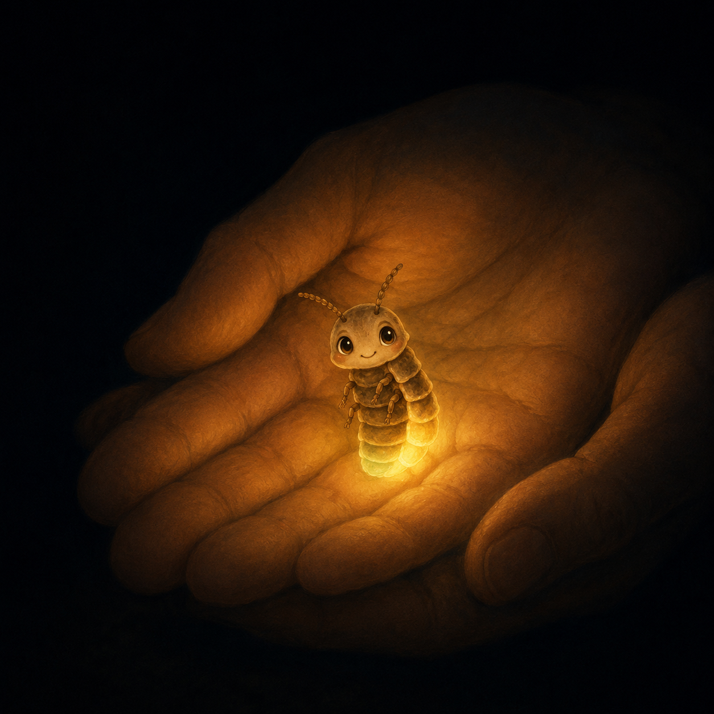
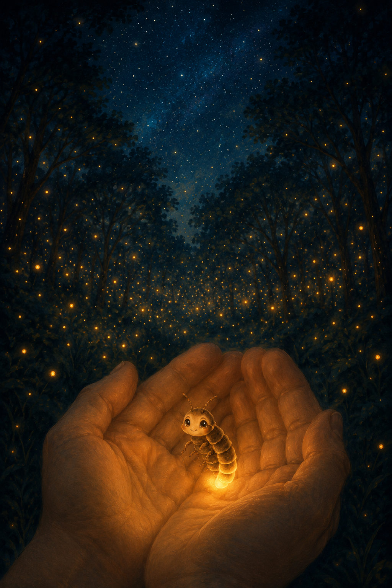

Miss Honey Couldn't Find Her Honey
Last night I sat in a park I had never been to before. I lay back on the grass and looked up at the stars, and wished I could reach up and hold just one.
Then one star seemed to float down towards me. It landed, very gently, on my hand.
It wasn't a star at all. It was a tiny firefly, glowing the soft golden colour of honey. So that's what I named her — Honey.
Her little light began to shake. “Please help me,” she whispered. “I'm lost.”
Fireflies don't see colours the way we do. They can spot warm colours, like their own golden glow, really well, but they can hardly see blue or green at all.

How many different lights can you spot around you right now? Streetlights, cars, signs, screens…?
“Where are you trying to go?” I asked.
“Home,” said Honey. “I have to find my honey — my mate. He's out there somewhere.” She pointed with her tiny head. “That way, I think.”
“Shall I give you a lift in my car?” I asked.
“Oh no!” she cried. “I can't go near cars and their bright headlights, or under the streetlights. Bright lights at night stop me finding my mate!”
Honey is a kind of firefly called a common glow-worm. Only the males can fly. Females like Honey climb up a blade of grass and switch on a light in their tail instead, and the males fly past in the dark, spot the glow, and land beside them. Once she's found her mate, a female turns her light off.

Which colours of light do you think are kinder to glow-worms — and which one is hardest for them? Have a guess before you read on!
Honey looked up at the streetlights and sighed. “There are so many of them now. They're so bright I can barely glow at all. The white ones are the worst.”
“What kind of light would be better for you?” I asked.
She thought for a moment. “I'm not really sure,” she said.
There are more than 2,000 kinds of firefly in the world. Common glow-worms like Honey live for only about two weeks, and use the dark to know when to glow — just like you sleep at night and wake in the morning. Bright artificial light tricks them into thinking morning has come, so they switch off too soon, and after years of more and more lights, our night skies have grown nearly 50% brighter.

Honey couldn't tell me which light was worst — but scientists have been finding out.
They made pretend common glow-worms and lit them up in different colours, to see which ones the boys would still fly to. The boys came to the red and yellow lights — but hardly any came to the blue or white ones. The colour of a light really matters: warm reds and yellows are kinder to glow-worms, and the bright white light we use most is the hardest of all.
See references ↓What do you think happens to a common glow-worm that sits under a bright light for a long time?
Honey looked down at her own glow. “Can you see? My light's getting dimmer,” she said. “The longer I sit under these lights, the harder it is to shine.”
She was right.
Scientists watched how long glow-worms could keep glowing under bright light before giving up. The longer they stayed under the light, the more of them stopped glowing altogether — and after a long time, almost nine out of every ten had gone dark.
See references ↓
I felt so sorry for Honey. “Does the light bother the boys too?” I asked.
“Yes!” said Honey. “I glow and glow, but they fly straight past me. I haven't done anything wrong!” A tear rolled down her tiny face.
In the dark, a common glow-worm can switch her light off after just one night. Why might that be a good thing?
I didn't know the answer either — but scientists had wondered the same thing.
Scientists watched how many nights it took for each female to find a mate. In the dark, most were found on their very first night and could switch their light off. Under bright lights, they had to keep glowing for many more nights, waiting for a mate who simply couldn't see them.
See references ↓“Don't cry, Honey,” I said. “Your light is so lovely — I'm sure you'll find your mate.”
But she shook her head. “You don't understand. Even when I hide far from the streetlights, I still can't get away from them. If only I had wings, I'd fly somewhere with no bright lights at all.”
And she was right about that, too.
Scientists tested whether moving further away from a light would help. It did — a little. But even far from the light, it was still much harder for the males to find the females. Distance alone couldn't undo the damage. Honey really couldn't escape it.
See references ↓Honey crawled onto my fingertip and looked right at me. “Will you do something for me?” she asked. “Will you tell other children about us? People have started to help, but we need so many more to know.”
“I will,” I promised.
Honey crawled up and kissed the tip of my finger. “It's a deal!”
Just then, all the lights in the park went out. Everything went quiet and dark.
And Honey began to dance in my palm! “Look!” she cheered. “Look at my light — it's getting brighter and brighter!”
“It's beautiful,” I said. And it really was.

I looked up. From deep in the woods, hundreds of little lights came drifting towards us — green and gold, filling the dark like a sky full of low, close stars. They had all come for Honey.
For a moment I couldn't tell which ones were fireflies and which were stars.
Before I left, Honey asked me to come back on Sunday. Maybe by then she'll have found her honey. Do you want to come with me? You already know what she needs.

Can you remember the ways we could help Honey?
Answers
- 1.
- Lights are everywhere — streetlights and car headlights, glowing signs and billboards, lights in greenhouses, even the lights on our own houses.
- 2.
- Red and yellow light are kinder — the boys can still find the girls. Bright white and blue light are the hardest of all.
- 3.
- The longer she stays under a bright light, the more likely her glow fades. After a long time, almost all common glow-worms stop glowing.
- 4.
- In the dark, a boy finds her on the very first night, so she can switch her light off. Under bright lights nobody finds her, so she has to keep glowing night after night.
- 5.
- Use warm red or yellow lights instead of white ones, keep lights on for less time, and best of all — switch off any light we don't need.
References
- Elgert, C. et al. (2021) ‘The duration of artificial light defines sexual signalling in the common glow-worm’, Behavioral Ecology and Sociobiology, 75(11). doi: 10.1007/s00265-021-03093-2.
- Kivelä, L. et al. (2023) ‘The color of artificial light affects mate attraction in the common glow-worm’, The Science of the Total Environment, 857, pp. 159451. doi: 10.1016/j.scitotenv.2022.159451.
- Owens, A. C. S. et al. (2022) ‘Behavioral responses of bioluminescent fireflies to artificial light at night’, Frontiers in Ecology and Evolution, 10. doi: 10.3389/fevo.2022.946640.
- Stewart, A. J. A., Perl, C. D. and Niven, J. E. (2020) ‘Artificial lighting impairs mate attraction in a nocturnal capital breeder’, Journal of Experimental Biology, 223(19). doi: 10.1242/jeb.229146.
- Van den Broeck, M. et al. (2021) ‘Blinded by the light: Artificial light lowers mate attraction success in female glow-worms (Lampyris noctiluca L.)’, Insects, 12(8), p. 734. doi: 10.3390/insects12080734.